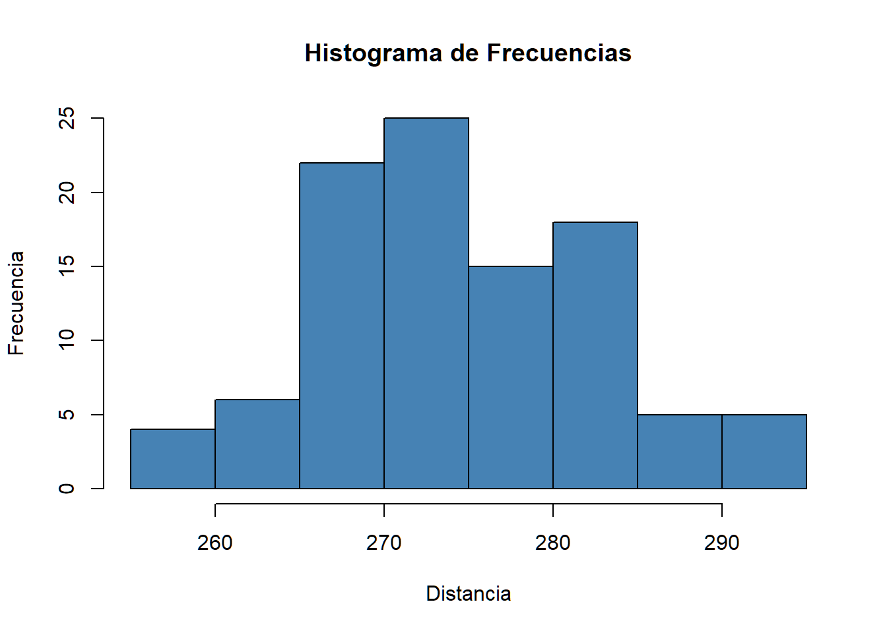
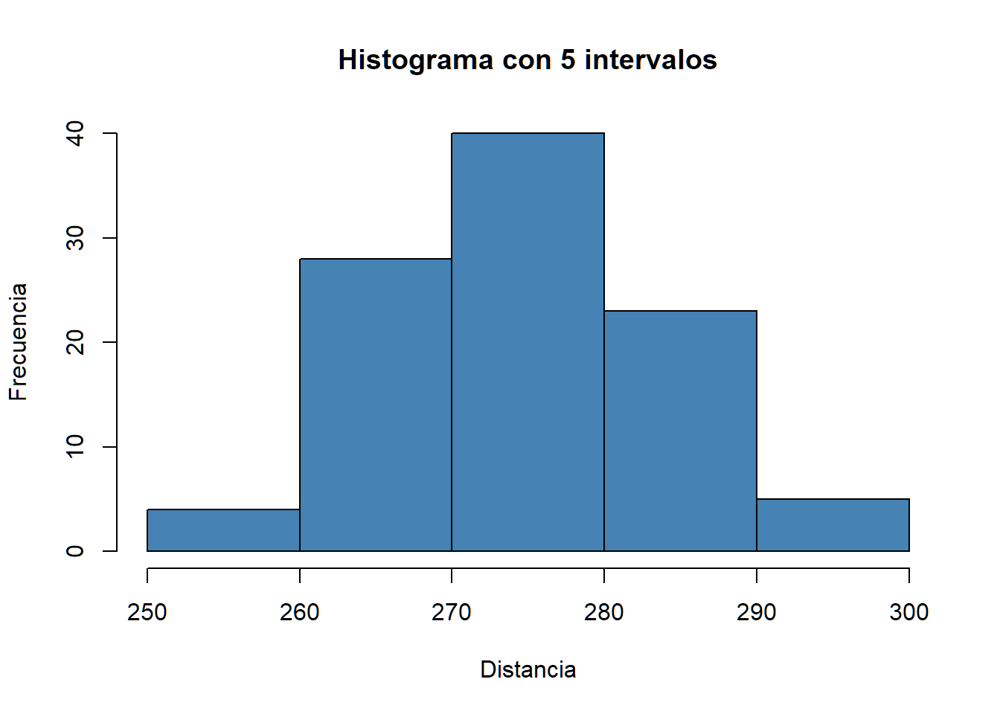
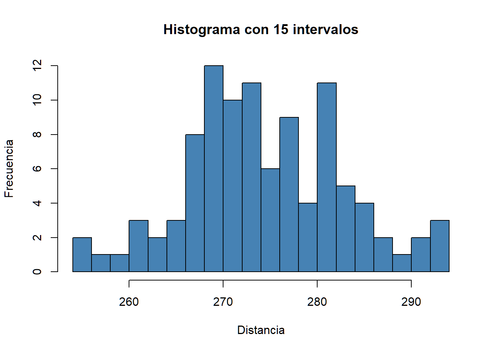
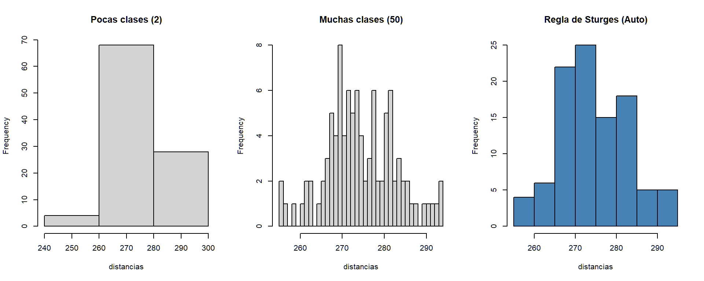

El histograma es la herramienta fundamental para analizar datos continuos. A diferencia del gráfico de barras (usado para categorías), aquí agrupamos los valores en “contenedores” o intervalos para visualizar cómo se distribuyen las mediciones.
Imagina que tienes el peso de 30 alumnos y quieres ver cómo se distribuyen en la clase. Como hay demasiados números distintos, el histograma agrupa los pesos en intervalos (ej. de 5 en 5 kg) para visualizar la tendencia.
El histograma suele confundirse con el gráfico de barras vertical. En esta tabla se muestran las diferencias:
| Característica | Gráfico de Barras | Histograma |
|---|---|---|
| Tipo de datos | Categorías (Ej: Fútbol, Tenis) | Números (Ej: Peso, Altura) |
| Espacio entre barras | Sí | No (están unidas) |
| Objetivo | Comparar grupos | Ver la forma de la distribución |
En resumen: El histograma te muestra visualmente si tu clase tiene un peso “promedio” (la mayoría en el centro) o si hay mucha variedad (barras repartidas por todos lados).
Usamos la función hist(x), donde:
x: Vector numérico de datos.prob = TRUE: Muestra la densidad
(proporción) en lugar de la frecuencia absoluta.breaks: Controla el número de
intervalos.Ejemplo1: Imagina que tenemos un vector/lista con la distancia que una motocicleta hizo con un tanque de gasolina lleno.
# Datos de distancias
distancias <- c(
291.5, 274.4, 290.2, 276.4, 272.0, 268.7, 281.6, 281.6, 276.3, 285.9,
269.6, 266.6, 283.6, 269.6, 277.8, 287.8, 267.6, 292.6, 273.4, 284.4,
270.7, 274.0, 285.2, 275.5, 272.1, 261.3, 274.0, 279.3, 281.0, 293.1,
277.5, 278.0, 272.5, 271.7, 280.8, 265.6, 260.1, 272.5, 281.3, 263.0,
279.0, 267.3, 283.5, 271.2, 268.5, 277.1, 266.2, 266.4, 271.5, 280.3,
267.8, 272.1, 269.7, 278.5, 277.3, 280.5, 270.8, 267.7, 255.1, 276.4,
283.7, 281.7, 282.2, 274.1, 264.5, 281.0, 273.2, 274.4, 281.6, 273.7,
271.0, 271.5, 289.7, 271.1, 256.9, 274.5, 286.2, 273.9, 268.5, 262.6,
261.9, 258.9, 293.2, 267.1, 255.0, 269.7, 281.9, 269.6, 279.8, 269.9,
282.6, 270.0, 265.2, 277.7, 275.5, 272.2, 270.0, 271.0, 284.3, 268.4
)
# Histograma de frecuencias
hist(distancias,
main = "Histograma de Frecuencias",
col = "steelblue",
xlab = "Distancia",
ylab = "Frecuencia")
Podemos ajustar el número de intervalos de manera manual añadiendo la
propiedad breaks.
hist(distancias,
main = "Histograma con 5 intervalos",
col = "steelblue",
xlab = "Distancia",
ylab = "Frecuencia",
breaks = 5) # Ajusta este número según quieras ver más o menos detalle
hist(distancias,
main = "Histograma con 15 intervalos",
col = "steelblue",
xlab = "Distancia",
ylab = "Frecuencia",
breaks = 15) # Ajusta este número según quieras ver más o menos detalle
breaks)La forma del histograma es muy sensible al número de intervalos:
# Comparativa visual
par(mfrow = c(1, 3)) # Dividir pantalla en 3 columnas
hist(distancias, breaks = 2, col = "lightgrey", main = "Pocas clases (2)")
hist(distancias, breaks = 50, col = "lightgrey", main = "Muchas clases (50)")
hist(distancias, col = "steelblue", main = "Regla de Sturges (Auto)")
par(mfrow = c(1, 1)) # Restaurar diseño originalDensidad vs Frecuencia: Al usar
prob = TRUE, el área total de las barras suma 1, lo que
permite comparar distribuciones aunque el número total de datos sea
distinto.
par(mfrow = ...): Es un comando muy
útil para comparar gráficos lado a lado. Recuerda siempre devolverlo a
c(1,1) al terminar, o tus siguientes gráficos saldrán todos
en una misma fila.